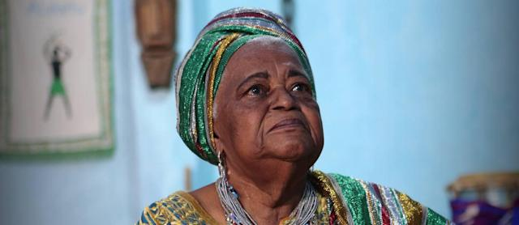

Mãe Beata: iyálorìṣa e ativista política
Nascida em Cachoeira, no Recôncavo Baiano em 20 de Janeiro de 1931, Beatriz Moreira da Costa, mais conhecida como Mãe Beata de Yemọjá chegou ao Rio de Janeiro no ano de 1969 e se estabeleceu na Baixada Fluminense, no bairro de Miguel Couto. Mãe de 4 filhos biológicos e incontáveis filhos de acè, construiu um legado de luta contra a discriminação racial e de gênero, intolerância religiosa e homofobia além de provomer ações de prevenção à sáude sobre ISTS, HIV e câncer de mama.
Meu sangue é negro e procuro guardar a nossa história. Lutarei pela memória do meu povo até quando os orixás me permitirem. Falar só aqui dentro não adianta, é preciso ir para a rua gritar.
Sua história
Mãe Beata, uma mulher negra, que cursou apenas os primeiros anos do ensino fundamental se tornou uma escritora, militante do meio ambiente, dos direitos humanos e defensora ávida da preservação dos saberes ancestrais africanos e em sua trajetória deixou um legado de muita luta e resistência contra as opressões. A pobreza em que foi criada em sua cidade natal, a falta de estudo e instrução em sua trajetória, não foram suficientes para conseguir para-la.
Iniciada em Salvador - BA por Mãe Olga do Alaketu, veio para o Rio de Janeiro atrás de uma vida melhor para seus 4 filhos e trabalhou como empregada doméstica, manicure, artesa, figurante da TV Globo e costureira, profissão em que se aposentou. Em Abril de 1985, Mãe Olga do Alaketu chegava ao Rio de Janeiro para inaugurar o Ilê Omi Oju Arô (a casa das águas dos olhos do Caçador), casa de acè de mãe Beata.
Não demorou para que o acè de Mãe Beata se consagrasse como um ponto de cultura com oficinas de dança, músicas e artes. Posteriormente ficou conhecida como centro de acolhimento e orientação de pessoas com HIV após um filho de acè ser diagnosticado.
Mãe Beata foi presidente da ONG Criola (organização de mulheres negras na luta contra o racismo e a discriminação de gênero), conselheira do projeto de saúde dos terreiros, o Ató Ire e também da ONG Viva Rio e integrante do CEDIM - Conselho Estadual dos Direitos da Mulher.